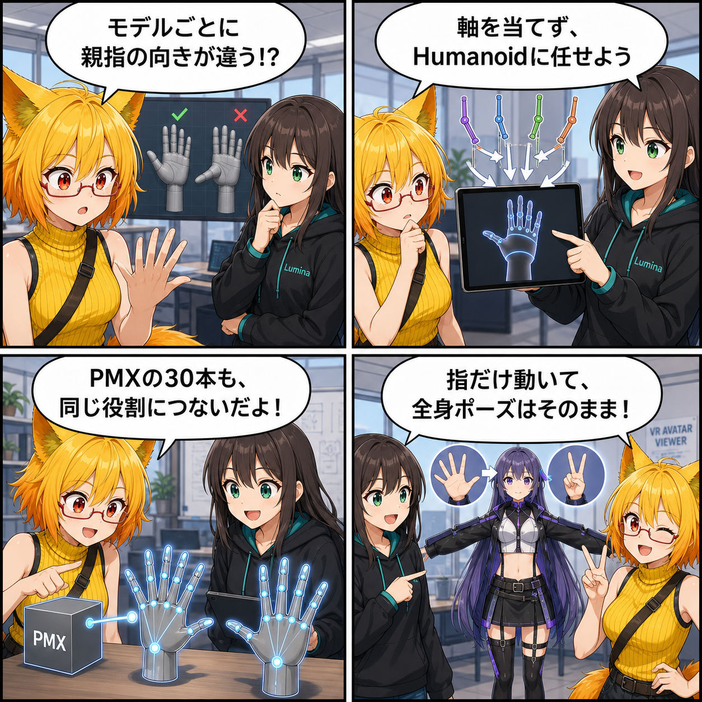

モデルが変わっても、指は自然に動く
2026-08-10 の開発日記では、FBXやPMXごとに異なる指ボーンの向きをViewer側で推測するのではなく、Unity Humanoidの「Finger Muscle」を使って指ポーズを適用する仕組みを取り上げます。PMXの左右5指・各3関節もHumanoidの役割へ対応させ、モデル形式が変わっても同じポーズ操作へつなげる改善です。
main ブランチで、集計期間内に記録された3コミットをもとにしています。4コマ内の会話や見せ方には、読み物として分かりやすくするための演出があります。集計期間は 2026-08-09 03:00:00 JST から 2026-08-10 02:59:59 JST までです。
集計終了時点の最終HEADは 11f82be（「Humanoid指制御とPMX指対応を追加」）で、対象コミットは 3件 でした。3コミットをまとめた変更規模は32ファイル、4,790行追加・208行削除です。確認時点では未コミット差分もありましたが、集計期間内の実装と確定できないためこの記事の実績には含めていません。
今日の主題：指の曲げ方をモデル固有の軸から切り離す
同じ「人差し指を曲げる」という操作でも、FBXやPMXでは各ボーンのローカル軸や左右の符号が異なる場合があります。Viewer側で軸を推測して回転させる方法は、あるモデルで自然に見えても、別のモデルでは親指がねじれたり、曲がる方向が反転したりする原因になります。
今回の改善では、有効なHumanoid Avatarと3関節すべてを解決できる指について、Unityが持つFinger Muscleを第一選択にしました。指の曲げ軸や左右差をUnityのHumanoid正規化へ任せることで、モデル固有の事情をViewerへ積み重ねずに済む構成です。Humanoid経路が使えない場合は、既存の幾何ベース処理へフォールバックします。
指だけを書き戻し、全身のポーズは守る
Humanoidの姿勢をそのままHierarchyへ再適用すると、指だけでなく腰の位置、腕、手首、IKなどまで書き戻される可能性があります。そこで現在の全身Poseを読み取った後、対象のFinger Muscleだけを変更し、Hierarchyへ直接結び付けない変換器でモデル固有の指回転を計算します。
実際のHierarchyへコピーするのは、変更対象となる指ボーンの localRotation だけです。これによりUnityのMuscle Space変換を利用しながら、腰や腕、手首など現在の非指ポーズを保ちます。指ポーズの取得側もHumanoid MuscleからViewerの角度表現へ戻せるようになりました。
PMXの30本の指ボーンをHumanoidへつなぐ
PMXにはUnityのModelImporterが持つHumanoid設定がないため、PMX Writer側で指ボーンをHumanoidの役割へ正規化します。対象は左右5指それぞれの付け根・中間・先端、合計30ボーンです。
日本語名・英語名・左右表記・全角数字を正規化して候補を探すだけでなく、各指が対応する手の配下にあり、3関節が正しい親子順で連結されていることも確認します。親指で使われる 0/1/2 と 1/2/3 の両方の番号付けにも対応しました。VABのバイナリ形式自体は変えず、既存のHumanoid roleへ揃えています。
回帰テストで「指以外が動かない」ことも確認する
追加された回帰テストでは、左右30指ボーンがHumanoid Avatarへ解決されること、曲げ量を段階的に増やしてMuscle値が逆転しないこと、Open・Fist・Peace・OK・Pinchなどのプリセットで不正なQuaternionを作らないことを確認します。
さらに、指を操作したときに腰・背骨・頭・腕・手首などの非指ポーズが変化しないこと、PMXをVABへ変換してHumanoidを再構築した後にもFinger Muscle経路へ到達できることを検証対象にしています。
ほかにも進んだこと
同じ集計期間には、SELESTIA_cosで確認された半透明材質の判定、親指屈曲の視覚回帰、PhysBoneの制限・カーブ互換性も修正されました。材質については、宣言された表面種別と実際の描画設定を共通の正規化処理へ集め、Editor変換とアプリ内VAB書き出しの両方で判定を揃えるテストが増えています。
4コマの裏話
4コマでは、モデルごとに親指の曲がり方が違う悩みから始まり、ルミナが「軸を当てるのではなくHumanoidへ任せよう」と提案します。ろひがPMXの30指ボーンを同じ役割へ結び、最後は指だけが動いて全身ポーズが守られる確認で締めます。
今日のまとめ
2026-08-10の記事対象期間では、指制御をモデル固有のTransform軸からUnity HumanoidのFinger Muscleへ移し、PMXの左右30指ボーンも同じ正規化経路へ接続しました。
異なるモデルを同じ操作感で扱うには、個別の向きを当て続けるより、共通の人体表現へいったん変換する方が堅実です。そして指だけを書き戻す境界を明確にすることで、すでに作った全身ポーズも守れます。
本日のひとこと： 指先はそろえても、全身までは動かさない。